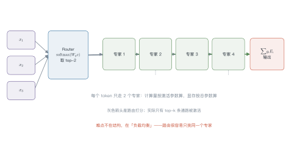
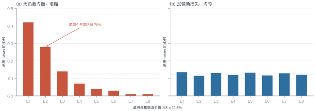
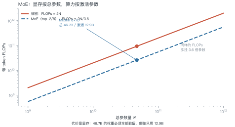
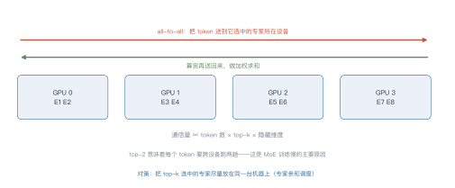

第 11 讲 MoE 与稀疏化¶
本讲位置
第五部分的开篇。第 6 讲说"参数和数据要同比增加"，但算力有限——MoE 给出另一条路：让参数变多，让每个 token 只算一小部分。
📅 事实核查至 2026-11
Switch Transformer（2021）、GShard、Mixtral（2024）、DeepSeekMoE 与 DeepSeek-V3（2024）均已核对原文。
学习目标¶
学完本讲，你应该能够：
- 写出 MoE 层的输出公式，手算一次 top-k 路由；
- 解释路由塌缩，并算出负载均衡损失的数值；
- 区分"总参数"与"激活参数"，说明 MoE 省的是算力而不是显存；
- 说出 DeepSeek 的三项改进各自解决什么问题。
0 直觉：一群专家，每次只叫几个¶
稠密模型的每一层，所有参数都参与每个 token 的计算。想让模型"记得更多"，只能加参数——但算力也跟着涨。
MoE 换个思路：准备很多个专家（每个都是一个小 FFN），每个 token 只挑其中 k 个来算。
类比一家医院：挂号台（router）看一眼病人，把他分到两个科室（top-2 专家），两个科室各出一份意见，加权合并成诊断。
- 医院总共有 8 个科室（总参数大 → 知识多）；
- 每个病人只看 2 个（激活参数小 → 算得快）。
一句话总结
MoE = 稀疏激活的 FFN 集合：参数量按总参数算，计算量和显存带宽按激活参数算。
具体一点：Mixtral 8×7B 与一个 46.7B 的稠密模型参数一样多，但前者每个 token 只算 12.9B 的部分。在同样的显存预算下，MoE 的"知识容量"接近稠密模型，速度却接近 13B 模型。
代价是训练更难：路由是离散选择，梯度只能通过被选中的专家回传，未选中的专家这一步完全没学到东西。这让 MoE 对学习率、初始化、数据顺序都更敏感。
1 结构¶

注意分母只对 top-k 求和——这叫重归一化，保证权重和为 1。
例 11.1 手算一次 top-2 路由¶
4 个专家，router 输出 logits \(=[2.0,\ 1.0,\ 0.5,\ 0.1]\)，取 top-2。
第一步，softmax：
总和 \(=12.86\)，得到 \([0.575,\ 0.211,\ 0.128,\ 0.086]\)。
第二步，取 top-2： 专家 1（0.575）与专家 2（0.211）。
第三步，重归一化：
第四步，加权输出： \(y=0.731\,E_1(x)+0.269\,E_2(x)\)。
从这个例子里能读出三件事
- 只有 2/4 的专家参与计算：算力省一半；
- 权重和为 1：重归一化保证了这一点，否则输出尺度会随 top-k 变化；
- router 本身很便宜：一个小线性层，参数量可以忽略。
2 负载均衡¶

为什么塌缩：router 的梯度会自我强化——某个专家一旦被多选，它学得更快，于是被选得更多，形成正反馈。
辅助损失（load balancing loss）：
- \(f_i\)：实际分配比例；
- \(P_i\)：router 给出的平均概率；
- 均匀时取最小值 1，越不均匀越大。
例 11.2 算一次辅助损失¶
4 个专家，\(f=[0.50,\ 0.30,\ 0.15,\ 0.05]\)，\(P=[0.45,\ 0.30,\ 0.15,\ 0.10]\)。
对照均匀情形（\(f_i=P_i=0.25\)）：
1.37 vs 1.0：差值 0.37 就是"不均匀的惩罚"。这个值乘上系数（通常 \(10^{-2}\)）后加进总损失。
2.1 容量因子与 token 丢弃¶
实际实现里，每个专家能接的 token 数有上限：
容量因子取 1.0 时，超出容量的 token 被直接丢弃（不经过这个专家）。这会损失信息，但保证了计算图的形状固定——GPU 上必须如此。
三个经验值：
- 训练：1.25 左右，容忍一点不均衡；
- 推理：1.0 甚至更小，优先保证延迟；
- 丢弃率监控：超过 5% 就该调大容量或改路由。
3 参数与计算解耦¶

以 Mixtral 8×7B 为例：
| 指标 | 数值 |
|---|---|
| 总参数 | 46.7B |
| 激活参数（top-2/8） | 12.9B |
| 每 token FLOPs | \(\approx 2\times12.9\)B |
| 显存（bf16） | \(\approx 93\) GB |
结论：MoE 省的是算力和带宽，不是显存。部署 MoE 的瓶颈往往在显存，不在算力。
4 DeepSeek 的三项改进¶
| 改进 | 做法 | 解决什么 |
|---|---|---|
| 细粒度专家 | 把专家切得更小、更多（如 64 个小专家选 6 个） | 组合更灵活，同等激活参数下表达力更强 |
| 共享专家 | 留 1–2 个专家对所有 token 都激活 | 承载通用知识，减少专家间的冗余 |
| 无辅助损失均衡 | 用可学习的 bias 调整路由分数，不写进损失 | 避免辅助损失与主目标冲突 |
第三点值得展开：辅助损失会"污染"主任务梯度——模型可能为了均衡而牺牲效果。DeepSeek-V3 改成在路由 logits 上加一个随负载动态调整的 bias：某个专家太闲就加一点分，太忙就减一点。这样均衡是"外部调节"，不参与梯度。
4.1 MoE 的推理困境¶
MoE 在训练时很划算，推理时却有个尴尬：批处理效率低。
稠密模型里，一个 batch 的所有 token 走同一条计算路径，GPU 利用率高。MoE 里不同 token 走不同专家，一个 batch 被切得七零八落——每个专家只分到一小批 token，矩阵乘法的规模变小，利用率下降。
后果是：理论算力省 3.6 倍，实测吞吐可能只省 1.5 倍。所以 MoE 在"高并发、大 batch"的云端服务里优势明显，在"低延迟、单请求"的边缘场景反而不划算。
5 专家并行¶

三个实现层面的关键参数：
- 容量因子（capacity factor）：每个专家最多收多少 token，超出就丢弃（token dropping）；
- 专家并行度：多少张卡分摊专家；
- all-to-all 带宽：跨机通信是瓶颈，通常要求 NVLink/IB。
5.1 为什么 MoE 训练不稳定¶
三个来源：
- 路由方差大：早期 router 接近随机，token 分配剧烈波动，损失曲线抖动；
- 专家冷启动：某个专家一开始没被选中，就永远学不到东西，形成"死专家"；
- 梯度尺度不一：不同专家承接的 token 数不同，梯度量级差异大。
对策是热身期用均匀路由（强制 round-robin），等 router 有了基本判断再放开；同时监控每个专家的承接量，出现"死专家"就重置它的参数。
import torch
import torch.nn.functional as F
def moe_forward(x, gate, experts, top_k=2):
"""x: (T, d)；gate: 线性层；experts: 专家列表"""
logits = gate(x) # (T, N)
probs = logits.softmax(-1)
top_p, top_i = probs.topk(top_k, dim=-1) # (T, k)
weights = top_p / top_p.sum(-1, keepdim=True) # 重归一化
out = torch.zeros_like(x)
for slot in range(top_k):
idx = top_i[:, slot]
for e, expert in enumerate(experts):
mask = idx == e
if mask.any():
out[mask] += weights[mask, slot, None] * expert(x[mask])
return out
def load_balance_loss(logits, top_i, num_experts):
"""式 (11.2)：均匀时取最小值 1"""
t = logits.size(0)
f = torch.bincount(top_i.flatten(), minlength=num_experts).float() / (t * top_i.size(1))
p = logits.softmax(-1).mean(0)
return num_experts * (f * p).sum()
6 工程要点与坑¶
- 别只看总参数：宣传的"671B"是总参数，实际激活可能只有 37B，按激活参数算成本。
- 容量因子调小会丢 token：丢的是信息，不是噪声，通常设在 1.0–1.25。
- 辅助损失系数要小：\(10^{-2}\) 量级，大了会明显掉点。
- 专家并行需要高带宽：跨机 all-to-all 会让吞吐掉一半以上。
- 微调 MoE 要小心：冻结 router 只训专家，容易失衡；全放开又容易塌缩。
- 推理时批处理效率低：不同 token 走不同专家，GPU 利用率不如稠密模型。
7 论文与延伸¶
| 年份 | 论文 | 一句话贡献 |
|---|---|---|
| 2020 | GShard | 大规模 MoE 的工程范式 |
| 2021 | Switch Transformer | top-1 路由 + 辅助损失 |
| 2022 | ST-MoE | 容量因子与稳定性 |
| 2024 | Mixtral of Experts | 开源 MoE 追平更大稠密模型 |
| 2024 | DeepSeekMoE | 细粒度 + 共享专家 |
| 2024 | DeepSeek-V3 | 无辅助损失的负载均衡 |
8 习题¶
🟢 概念题
- 为什么说 MoE 省算力但不省显存？
- 路由塌缩为什么是正反馈？给出打破它的两种方法。
🟡 推导题
- 用式 (11.1) 证明重归一化后权重和为 1，并说明不重归一化会怎样。
- 用式 (11.2) 算：\(N=8\)、\(f=[0.4,0.2,0.15,0.1,0.05,0.05,0.03,0.02]\)、\(P\) 与 \(f\) 相同时的辅助损失。
🔴 实现题
- 跑通上面的
moe_forward，统计每个专家实际承接的 token 数，观察是否塌缩。 - 给 router 加一个可学习 bias（DeepSeek 式），实现无辅助损失的均衡，并与辅助损失方案对比。
9 本讲小结¶
一个公式
两个数字
- Mixtral 8×7B：总 46.7B / 激活 12.9B，省 3.6 倍算力
- 辅助损失：均匀时 1.0，塌缩时明显大于 1
三个改进
细粒度专家 · 共享专家 · 无辅助损失均衡
一句话
MoE 用稀疏性换容量：显存按总参数付，算力按激活参数付。
来源¶
- Switch、Mixtral、DeepSeekMoE、DeepSeek-V3 的结论核对自原文，链接见 §7，核查日期 2026-11。